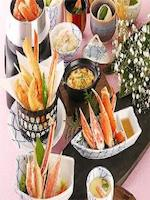
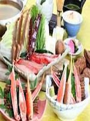
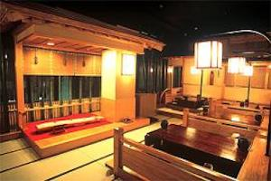

ปูปล่อยตัว
ชินจูกุ
จำกัด เวลา (จนถึง 4 มีนาคม) ยุติธรรมชาบูหรือที่จะแนะนำ
ปูหิมะเต็มไปด้วยรสชาติที่ละเอียดอ่อนและกษัตริย์ปูปูด้วยความโกรธ ช่วงเวลาของความสุขว่าช่วงเวลาที่จะรวมอยู่ในปากพิเศษ ponzu และโฮมเมดของคุณ Asashide อัญมณีสุดหรูของรสชาติเหล่านี้ถูกกักขังไว้แน่น หวานล้นออกจากร่างกายกระจายอยู่ในปากมีรสชาติ



วิธีการกินปูหิมะ